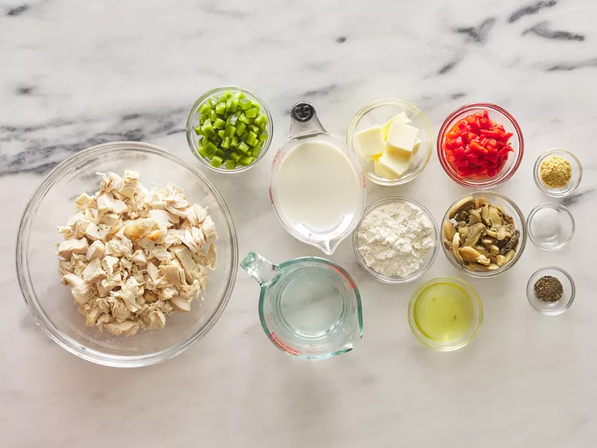

Introduction
Chicken à la king is easy and elegant. It's a great way to use leftover chicken or turkey. Green pepper and red pimientos make this a pretty dish to serve at Christmas or anytime. Serve over cooked rice, toast, or noodles. Can be made ahead and reheated.
Ingredients
- ⅓ cup soy sauce
- 2 green onions, chopped, dark green parts separated from white and light green parts
- ¼ yellow onion, thinly sliced
- 3 tablespoons white sugar
- 3 cloves garlic, minced
- 2 tablespoons toasted sesame seeds
- 1 tablespoon sesame oil
- ¼ teaspoon Korean red pepper flakes
- ¼ teaspoon minced fresh ginger
- ⅛ teaspoon ground black pepper
- 1 ½ pounds beef sirloin steak, cut very thin using kitchen shears
- 1 teaspoon honey, or to taste
Step-by-Step Instructions
Step 1
Gather all ingredients.
 Next →Step 2
Melt butter in a large skillet over medium heat. Add drained mushrooms and bell pepper and cook, stirring, for 5 minutes.
← Previous Next →Step 3
Remove from heat. Stir in flour, salt, and black pepper. Cook over low heat, stirring constantly, until mixture is bubbly.
← Previous Next →Step 4
Stir in milk, water, bouillon, and reserved mushroom liquid. Increase heat to medium-high and bring to a boil, stirring constantly.
← Previous Next →Step 5
Stir in chicken and pimento and heat through.
← Previous Next →Step 6
Serve and enjoy!
 ← Previous
Restart ↺
← Previous
Restart ↺